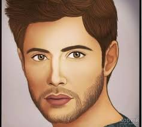
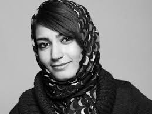
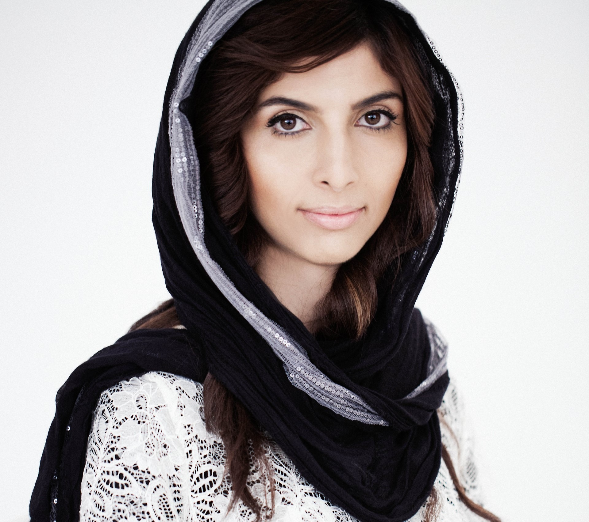
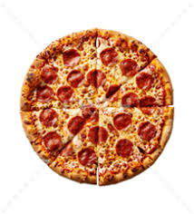
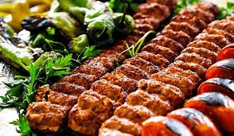
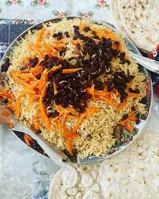
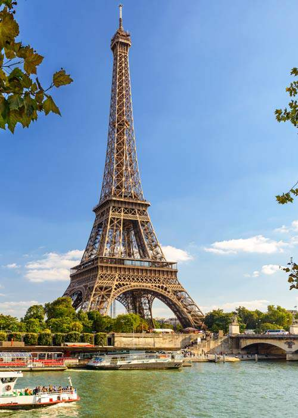
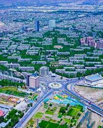

About Me
My name is Sarah Noorizada, I am learning web design and coding. I enjoy exploring creativity and expressing myself through design, drawing, and music.
My goal is to become a skilled web designer and creative developer in the future, applying my skills in real projects to inspire others.
Inspirational People
- My Brother-Seyed Aslan Noorizadeh
- Ms. Fereshteh Forough
- Ms. Roya Mahboob



My Favorite Foods
- Pizza
- Kebab
- Qabili Palau



My Favorite Places
- Paris, France
- Afghanistan
- London, United Kingdom

